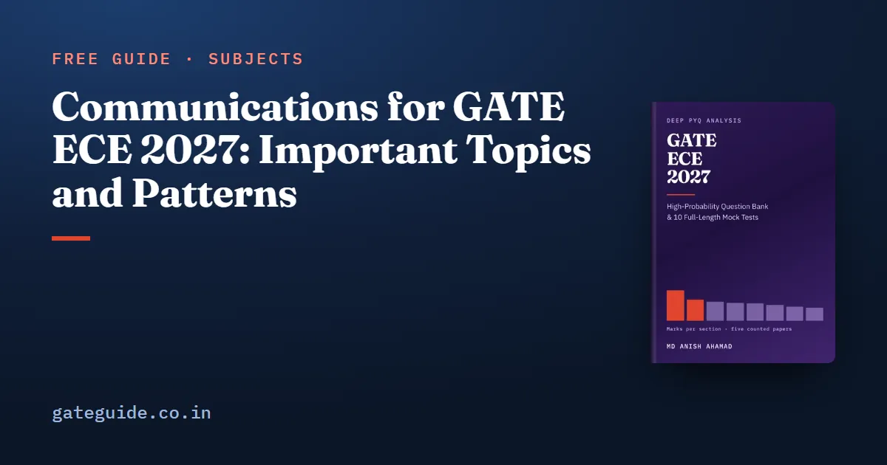

Communications for GATE ECE 2027: Important Topics and Patterns

Communications is worth about ten marks in the GATE EC paper, and it is unusually steady about it. Counted question by question across five papers — 2010, 2019, 2020, 2025 and 2026 — it delivered 32 questions and 50 marks, a mean of 10.0, and never fewer than 9 or more than 12 in any year. What sets it apart is not its size but its format: half of its questions ask you to type a number.
In this guide
This guide gives the counted marks, the concepts that keep coming back with the question numbers behind them, the one line the 2027 syllabus changed, and a preparation order that follows the evidence.
Key takeaways
- Counted marks by year: 9 (2010), 10 (2019), 9 (2020), 12 (2025), 10 (2026). Mean 10.0, from 6.4 questions a paper.
- Two concepts appear in all five counted papers: angle modulation, and MAP/ML detection with an error probability.
- Digital Communications is 20 of the section's 50 counted marks, and Information Theory has risen from zero in 2010 and 2019 to 8 marks across the last three counted papers.
- The section is 50 per cent multiple choice, the lowest share of any section. Practise to a number, not to an option.
- The 2027 syllabus adds one phrase, source coding, which has no counted precedent. Superheterodyne receivers, DPCM, ISI and CRC are named in the syllabus and absent from all five papers.
What the section is worth
| Paper | Organising institute | Questions | Marks | MCQ | NAT | MSQ |
|---|---|---|---|---|---|---|
| 2010 | IIT Guwahati | 6 | 9 | 6 | 0 | 0 |
| 2019 | IIT Madras (sets 2027) | 6 | 10 | 2 | 4 | 0 |
| 2020 | IIT Delhi | 6 | 9 | 2 | 4 | 0 |
| 2025 | IIT Roorkee | 8 | 12 | 4 | 2 | 2 |
| 2026 | IIT Guwahati | 6 | 10 | 2 | 2 | 2 |
| Five papers | 32 | 50 | 16 | 12 | 4 |
Two readings matter. First, the format: 2010 had no numerical-answer format at all, so its six MCQs say nothing about 2027. From 2019 onwards, 12 of 26 Communications questions were NAT. Second, the multiple-select questions arrived in 2025 and have been used for statement-checking — 2025 Q28 on envelope detection of DSB-SC against AM, 2026 Q57 on which signals fit a narrowband bandpass form. The same comparison for all nine sections is in the GATE ECE subject-wise weightage guide.
A note on numbering: the book counts every paper from Q1 to Q65 straight through. The printed 2019 and 2020 papers restart at 1 after General Aptitude, so subtract 10 to find those questions in the PDF.
Where the marks sit inside the section
| Topic | 2010 | 2019 | 2020 | 2025 | 2026 | Marks | Papers |
|---|---|---|---|---|---|---|---|
| Digital Communications | 5 | 6 | 3 | 2 | 4 | 20 | 5 of 5 |
| Analog Communications | 2 | 1 | 4 | 2 | 2 | 11 | 5 of 5 |
| Information Theory | 0 | 0 | 1 | 5 | 2 | 8 | 3 of 5 |
| Random Processes | 2 | 2 | 1 | 2 | 0 | 7 | 4 of 5 |
| Error correction and coding | 0 | 1 | 0 | 1 | 2 | 4 | 3 of 5 |
Digital Communications is two-fifths of the section on its own. Analog Communications appears every year but mostly at one mark: eight questions for eleven marks. Information Theory is the one clear movement in the record — absent from the two older papers, then three separate questions in 2025 (Q15, Q54, Q60).
The concepts that recur
Detection and error probability — 5 of 5 papers. 2010 Q55, 2019 Q44 and Q57, 2020 Q58, 2025 Q41, 2026 Q44. This is the spine of the section. The older papers asked for a threshold or an energy comparison; 2025 and 2026 asked for the error probability itself, a symbol error rate for a three-point constellation and a QPSK bit error rate from . The concept is fixed; the answer has moved towards a computed number.
Angle modulation — 5 of 5 papers. 2010 Q21 (average power), 2019 Q32 (a ratio of instantaneous frequencies under phase modulation), 2020 Q57 (the phase and frequency deviation constants), 2025 Q14 (peak deviation of a multi-tone FM signal) and 2026 Q57 (a classification that includes narrowband FM). Every one of them comes back to instantaneous frequency as the derivative of phase.
Amplitude modulation — 4 of 5. 2010 Q20, 2020 Q52, 2025 Q28, 2026 Q57: overmodulation, a frequency-offset local carrier, and which signals an envelope detector can recover.
Random processes — 4 of 5, always exactly one question. 2010 Q45, 2019 Q55, 2020 Q34, 2025 Q42. Output power spectral density through a filter, noise variance, and a wide-sense stationarity test. Nothing in 2026.
Information theory — 3 of 5, all recent. 2020 Q32 (the that maximises binary entropy), 2025 Q15 (capacity against bandwidth), 2025 Q54 (entropy of a ternary variable), 2025 Q60 (mutual information from a joint PMF) and 2026 Q55 (Shannon capacity from a link budget in dBm).
Hamming codes — 3 of 5. 2019 Q17 builds a codeword from the encoder's linearity, 2025 Q33 asks a minimum distance, and 2026 Q63 asks the probability that a (7,4) decoder fails. Three faces of one code family.
Digital bandwidth — 2 of 5. 2019 Q56 (a PCM bit rate from a sampled AM signal) and 2026 Q22 and Q32 (Nyquist bandwidth for 4-level signalling, minimum bandwidth for 16-QAM). Two of 2026's six questions were bandwidth arithmetic.
What the 2027 syllabus changed
One phrase. The Information Theory line read Entropy, mutual information and channel capacity theorem in 2026; in 2027 it reads Entropy, source coding, mutual information and channel capacity theorem. The only other difference between the two PDFs is auto correlation becoming autocorrelation, which is typesetting. The wider picture is in the GATE ECE 2027 syllabus changes guide; confirm the current wording against the official PDF, because it can be revised.
Be exact about the evidence. No counted paper contains a source coding question — no Huffman code, no average codeword length, no efficiency, no Kraft inequality. What does exist is the entropy underneath it, asked in 2020 Q32 and 2025 Q54, with 2025 Q60 needing joint and marginal entropies. The book's judgement, and it is a judgement, is that a newly named line on the section's fastest-rising topic deserves a defined slot: Huffman construction on four or five symbols, average length, efficiency as divided by average length, , and the bound that average length sits between and , . That is a few hours, not a week.
What has never been asked
Five papers is five observations, so absence is weak evidence — but it is evidence. Superheterodyne receivers, DPCM, inter-symbol interference with the raised-cosine pulse, and CRC are all named in the syllabus and produced no counted question. A matched filter appears once, in 2010 Q24. Learn the one standard calculation for each (the image frequency, a CRC remainder by mod-2 division) and move on.
The IIT Madras paper
GATE 2027 is set by IIT Madras, and 2019 is the one counted paper it also set. Its Communications section sat exactly on the mean, 10 marks from 6 questions, and four of the six were NAT. Two of them ran through another section's machinery: 2019 Q56 is a sampling question underneath a PCM bit rate, and 2019 Q57 is a probability-density question underneath a MAP threshold. One paper is a signal, not a law, but it is a reasonable prompt to practise Communications problems whose real work is sampling or a probability density. Its lack of information theory and of MSQ reflects when it was set, not who set it: neither appears in any counted paper before 2020.
How to prepare it
In order of evidence, not syllabus order:
- Detection and BER. MAP threshold with unequal priors, ML as the equal-prior case, antipodal against orthogonal signalling, the Q-function, against , QPSK and small M-ary constellations.
- Angle modulation. Instantaneous frequency, and , peak deviation for one or several tones, Carson's rule, and the fact that FM power does not depend on the modulation index.
- AM and DSB-SC. Modulation index, power split, envelope-detector conditions, coherent detection with a phase or frequency error.
- Information theory with source coding. Entropy, mutual information, BSC capacity, Shannon–Hartley in dB and dBm, then Huffman and efficiency.
- Random processes. Output PSD as the input PSD times the squared magnitude response, , white-noise variance through a filter or integrator, stationarity checks.
- Bandwidth and PCM, then Hamming codes. Symbol rate from bit rate, baseband against passband bandwidth, PCM bit rate; generator and parity-check matrices, minimum distance, correctable errors, decoder failure on a BSC.
Two habits pay across all six. Write the convention down before the first line of algebra: one-sided or two-sided noise density, baseband or passband bandwidth, the 2 inside the Q-function argument. In a NAT a factor of two is a zero. And rehearse the calculations on the on-screen virtual calculator, because logs to base 2 and Q-function arguments are where time goes.
Wrong multiple-choice answers cost a third or two-thirds of their marks; multiple-select and numerical answers carry no negative marking, but a multiple-select answer earns nothing unless you mark exactly the correct options. With half this section numerical, accuracy matters more than elimination.
This guide covers the section; the ECE book carries 30 Communications questions written for it with worked solutions, including source coding, CRC and superheterodyne items flagged as having no counted precedent. For how Communications ranks against the other eight sections, see the GATE ECE important topics guide.
Frequently asked questions
How many marks does Communications carry in GATE ECE?
Counted question by question across the five papers used for this analysis, Communications took 9, 10, 9, 12 and 10 marks in 2010, 2019, 2020, 2025 and 2026. That is 32 questions and 50 marks, a mean of 10.0 marks a paper. No counted year went below 9 or above 12, so it is a steady section rather than a volatile one.
Which Communications topics are asked most often in GATE ECE?
Two concepts appear in all five counted papers. Angle modulation was asked in 2010 Q21, 2019 Q32, 2020 Q57, 2025 Q14 and 2026 Q57. MAP and ML detection with error probability was asked in 2010 Q55, 2019 Q44 and Q57, 2020 Q58, 2025 Q41 and 2026 Q44. Amplitude modulation and random processes each appear in four of the five.
What changed in the GATE 2027 Communications syllabus?
One phrase. The Information Theory line now reads entropy, source coding, mutual information and channel capacity theorem, so source coding is named for the first time. The other difference between the two PDFs, autocorrelation printed as one word instead of two, is typesetting. Confirm the current text against the official GATE 2027 syllabus PDF.
Has source coding been asked in GATE ECE before?
Not in any of the five counted papers. There is no Huffman code, average codeword length or coding efficiency question in 2010, 2019, 2020, 2025 or 2026. What has been asked is the entropy it rests on, in 2020 Q32 and 2025 Q54, so a candidate who computes entropy fluently already has half of a likely source coding question.
Is Communications in GATE ECE mostly numerical?
More than any other section. Across the five counted papers it ran 16 multiple-choice, 12 numerical-answer and 4 multiple-select questions, exactly 50 per cent MCQ against about 70 per cent for the paper as a whole. Half the section gives you no options to eliminate, so practise every topic through to a typed number.
Sources
- GATE 2027 official website (IIT Madras)
- GATE 2027 EC syllabus PDF (IIT Madras)
- GATE 2026 EC syllabus PDF (IIT Guwahati)
- GATE 2026 EC question paper (IIT Guwahati)
- GATE 2026 EC answer key (IIT Guwahati)
- GATE 2025 EC question paper (IIT Roorkee)
- GATE 2020 EC question paper with answer key (IIT Delhi)
- GATE 2019 EC question paper with answer key (IIT Madras)
Dates, fees and the syllabus are set by the GATE 2027 organising institute and can change. Always confirm at gate2027.iitm.ac.in.